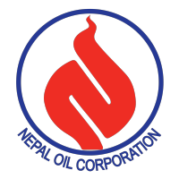

Arish AcharyaLearning Web Development, IT Networking Student, SAP Business One Support I enjoy working from Home, Travelling, and being still Striving so that i could help as much as possible I Love 🐵 |
My AcademicsSchool: KMC School (Distinction)HighSchool: CCRC College : Management (First Division)Bachelors: Islington College : Bsc.BIT in Networking and IT Security (First Class Honors) |
Skillsets
|
Work ExperienceNepal Oil Corporation (2020 Nov - 2021 Nov)
|
 |
InternshipOutsource Array (2019 Nov - 2020 Jan)
|